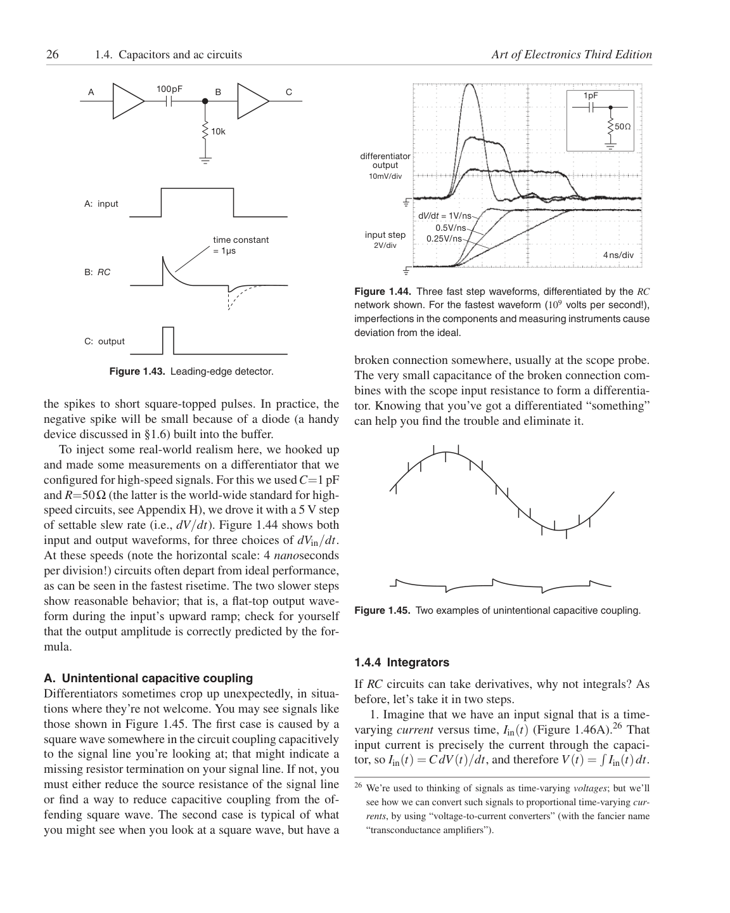

<!doctype html>
<html lang="en"><head><meta charset="utf-8"><meta name="viewport" content="width=device-width,initial-scale=1">
<title>Page 26 of 70</title><meta name="source-page" content="26"><link rel="stylesheet" href="../styles.css">
<link rel="prev" href="page-025.html"><link rel="next" href="page-027.html"></head><body>
<header><div><a class="back" href="../index.html">All pages</a> <span class="meta">Source page 26 / 70</span></div>
<nav class="nav" aria-label="Page navigation"><a href="page-025.html">Previous</a><a href="page-027.html">Next</a></nav></header>
<main><h1 class="meta">Page 26</h1><figure class="sheet"></figure>
<details class="transcript" open><summary>Fetchable text — page 26</summary><div class="text"><p>26
1.4. Capacitors and ac circuits
Art of Electronics Third Edition</p><p>100pF
B
C
A</p><p>1pF</p><p>50Ω</p><p>10k</p><p>differentiator</p><p>output
10mV/div</p><p>A: input</p><p>dV/dt = 1V/ns</p><p>input step</p><p>0.5V/ns
0.25V/ns</p><p>2V/div</p><p>time constant
= 1μs</p><p>4ns/div</p><p>B: RC</p><p>Figure 1.44. Three fast step waveforms, differentiated by the RC
network shown. For the fastest waveform (109 volts per second!),
imperfections in the components and measuring instruments cause
deviation from the ideal.</p><p>C: output</p><p>Figure 1.43. Leading-edge detector.</p><p>broken connection somewhere, usually at the scope probe.
The very small capacitance of the broken connection combines with the scope input resistance to form a differentiator. Knowing that you’ve got a differentiated “something”
can help you find the trouble and eliminate it.</p><p>the spikes to short square-topped pulses. In practice, the
negative spike will be small because of a diode (a handy
device discussed in §1.6) built into the buffer.</p><p>Figure 1.45. Two examples of unintentional capacitive coupling.</p><p>To inject some real-world realism here, we hooked up
and made some measurements on a differentiator that we
configured for high-speed signals. For this we usedC=1 pF
and R=50Ω (the latter is the world-wide standard for highspeed circuits, see Appendix H), we drove it with a 5 V step
of settable slew rate (i.e., dV/dt). Figure 1.44 shows both
input and output waveforms, for three choices of dVin/dt.
At these speeds (note the horizontal scale: 4 nanoseconds
per division!) circuits often depart from ideal performance,
as can be seen in the fastest risetime. The two slower steps
show reasonable behavior; that is, a flat-top output waveform during the input’s upward ramp; check for yourself
that the output amplitude is correctly predicted by the formula.</p><p>1.4.4 Integrators</p><p>If RC circuits can take derivatives, why not integrals? As
before, let’s take it in two steps.</p><p>1. Imagine that we have an input signal that is a timevarying current versus time, Iin(t) (Figure 1.46A).26 That
input current is precisely the current through the capacitor, so Iin(t) = CdV(t)/dt, and therefore V(t) =</p><p> Iin(t)dt.</p><p>26 We’re used to thinking of signals as time-varying voltages; but we’ll
see how we can convert such signals to proportional time-varying currents, by using “voltage-to-current converters” (with the fancier name
“transconductance amplifiers”).</p><p>A. Unintentional capacitive coupling
Differentiators sometimes crop up unexpectedly, in situations where they’re not welcome. You may see signals like
those shown in Figure 1.45. The first case is caused by a
square wave somewhere in the circuit coupling capacitively
to the signal line you’re looking at; that might indicate a
missing resistor termination on your signal line. If not, you
must either reduce the source resistance of the signal line
or find a way to reduce capacitive coupling from the offending square wave. The second case is typical of what
you might see when you look at a square wave, but have a</p></div></details></main>
<footer>Visual layout, figures, tables, equations, footnotes, and original printed page number are preserved in the lossless page image. <a href="../text/page-026.txt">Plain text</a> · <a href="../data/page-026.json">JSON</a></footer>
</body></html>